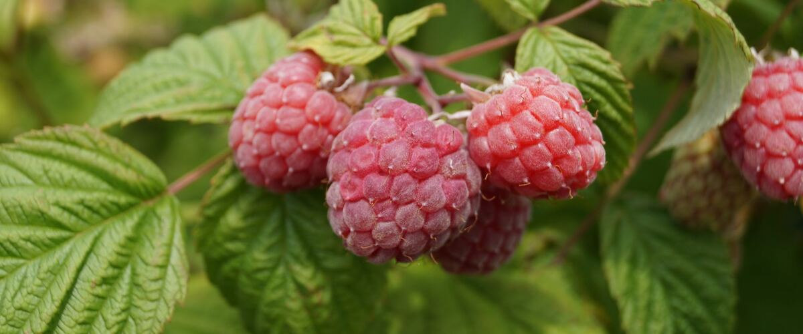
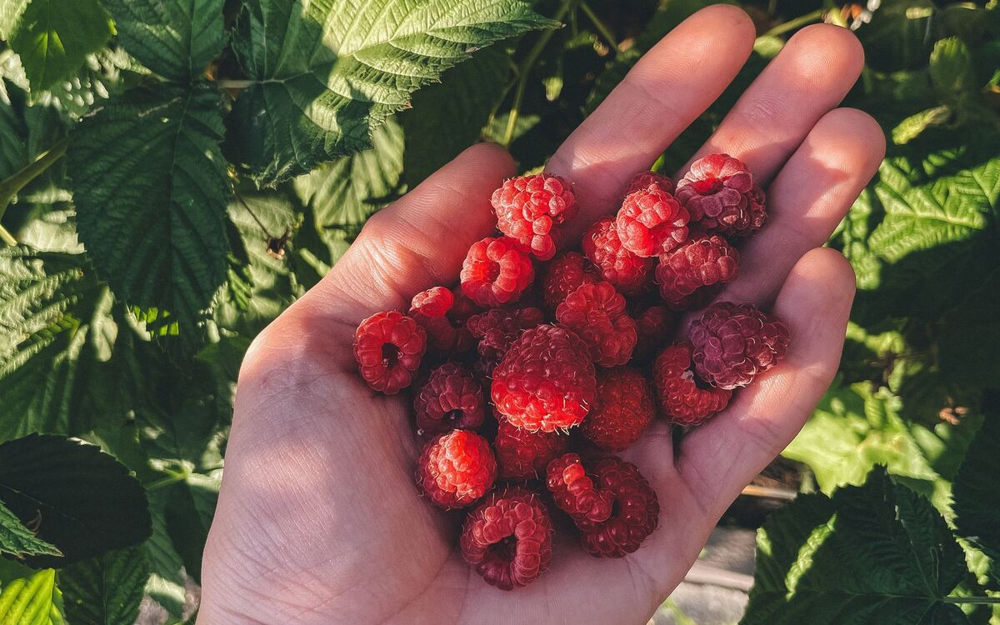

Plant guides · Oregon · Washington · Idaho
Growing Raspberries
Summer-bearing or fall-bearing, how to plant canes so they don't drown in winter, and the pruning that keeps a raspberry patch productive for years.
Raspberries love the Northwest. Cool nights, mild summers and long days suit them so well that northwest Washington grows a large share of the country's red raspberries. A home patch planted well can produce for ten years or more.
The two things that decide success are drainage and pruning. Get those right and raspberries are one of the most rewarding fruits you can grow here.
Summer-bearing or fall-bearing?
Raspberry canes live for two years. In the first year a new cane grows tall and leafy; in the second it fruits and then dies. That cycle gives two main types:
- Summer-bearing (floricane) raspberries fruit once, in late June and July, on last year's canes. They give the biggest single crop. Meeker and Tulameen are long-time Northwest favorites, and Cascade Delight was bred to handle wetter soils.
- Fall-bearing (primocane or everbearing) raspberries fruit in late summer and fall on the tips of this year's canes. Heritage and Caroline are common picks. They're simpler to prune, and the late crop misses the July glut. In the coolest coastal and mountain gardens, fall rain and early frost can cut the harvest short.
Many gardeners plant some of each to stretch the season from early summer to the first frost.
Drainage comes first
The main killer of raspberries in western Oregon and Washington is root rot, a soil-borne disease that thrives in roots sitting in wet, heavy soil over winter. Canes wilt and die in patches, often in the second or third year.
The fix is to plant where water never stands, and to raise the rows. A mounded row or raised bed 8 to 12 inches high, with plenty of compost mixed in, keeps the crowns out of the winter wet. If you've lost raspberries before in the same spot, start a new row somewhere else.
Planting
Plant bare-root canes or potted plants in early spring, about 2 to 3 feet apart in a row, with rows 6 to 8 feet apart so you can walk and pick between them. Set them at the same depth they grew in the nursery, water well, and cut bare-root canes back to about 6 inches to push new growth from the roots. Raspberries spread by underground runners, so give the row an edge you can mow along. Full sun gives the sweetest berries.
A simple trellis
Canes flop when they're loaded with fruit. Two wires running down each side of the row, held about 3 to 4 feet up on posts or crossbars, keep canes upright and berries off the ground. Put the trellis in when you plant; it's much harder to add later.
Pruning, the easy way
Summer-bearing: right after harvest, cut every cane that just fruited down to the ground. They're easy to spot: grayer, with dried fruiting stems. Leave the green new canes. In late winter, thin those to the strongest canes, about 4 to 6 inches apart, and trim tips that have grown above the trellis.
Fall-bearing: in late winter, cut all canes to the ground. You'll get one fall crop on the new growth, with no sorting of old and new canes. (You can instead leave the lower parts of the canes for a small early-summer crop too, but most home growers prefer the simple mow-down.)

Feeding, watering and pests
Spread compost along the row each spring. Raspberries are shallow-rooted, so they need steady water from flowering through harvest: a soaker hose or drip line under mulch is ideal, and keeping the leaves dry helps prevent fruit mold.
The main fruit pest is spotted wing drosophila, a tiny fruit fly that lays eggs in ripening berries. Pick every day or two during harvest, don't leave overripe or fallen berries in the patch, and refrigerate what you pick straight away. Birds are the other thieves; light netting over the row helps in heavy years.
See the raspberry planting guide for planting dates in your town.